Live telemetry
Poll interface state, ARP, BGP and CPU/memory over RESTCONF and pin every observation to a local SQLite store for weeks of history.
RESTCONF · SQLiteCAT8k·SYNC is a network-automation platform for a single Cisco Catalyst 8000v edge router — live telemetry, one-click branch provisioning, compliance auditing and deep analytics, all in one dark control room. RESTCONF primary, NETCONF & SSH in reserve.
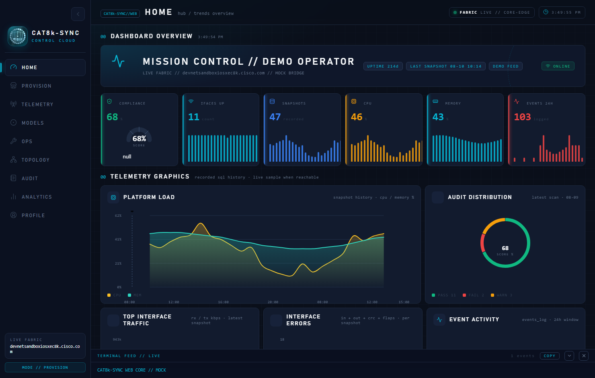
Built for a single Catalyst 8000v, end to end — collect, detect, provision, audit, analyse.
Poll interface state, ARP, BGP and CPU/memory over RESTCONF and pin every observation to a local SQLite store for weeks of history.
RESTCONF · SQLiteJinja2-templated RESTCONF operations spin up branch networks, sub-departments and static hosts in roughly five seconds per cycle.
Jinja2 · RESTCONFA 16-policy posture scan flags drift, banner and SSH issues — with one-click fixes, revert, factory reset, and an immutable event ledger.
16 policies · ledgerWindowed 1D / 1W / 1M charts for resource load, availability, ARP scale, throughput, error bursts and top talkers — each windowed graph in sync.
1D · 1W · 1M · ALLCredentials never touch disk in plain text. They live in an encrypted SQLite vault, are masked everywhere, and are used only at call time.
at-rest encryptionA Playwright suite exercises every view, console logs are watched, and every release ships only after the full gate runs clean.
playwright · 40+ checksA loopback server on 127.0.0.1:17771 drives the same UI in a pywebview native window or your default browser. Click any view to inspect it.
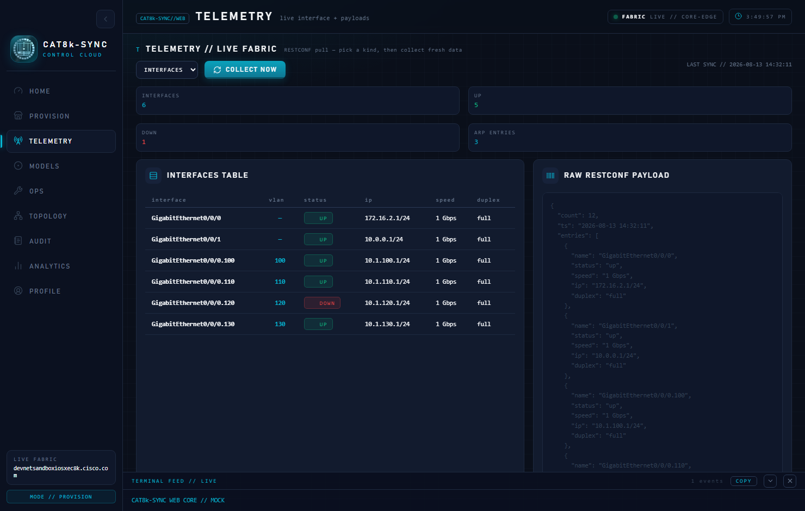
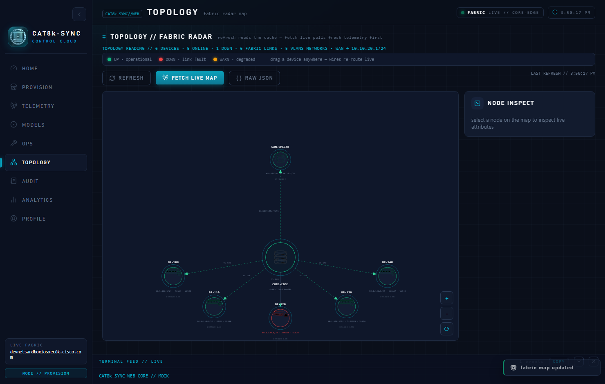
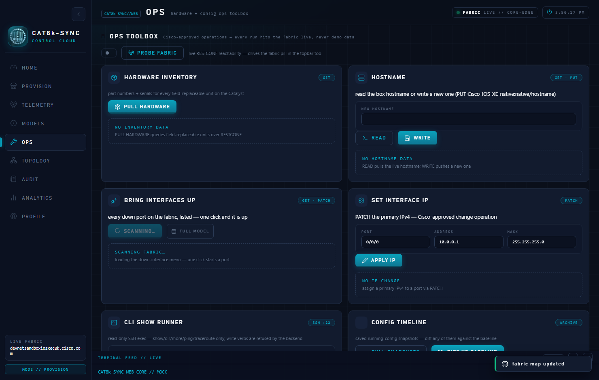
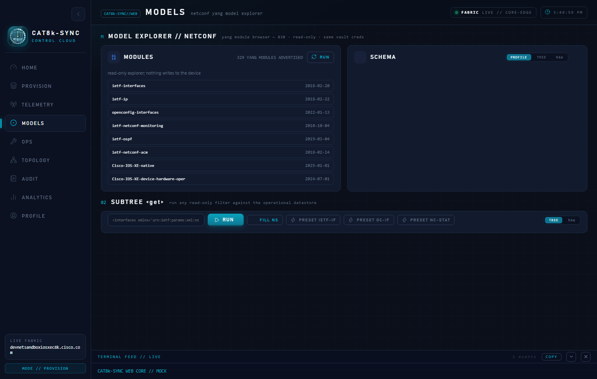
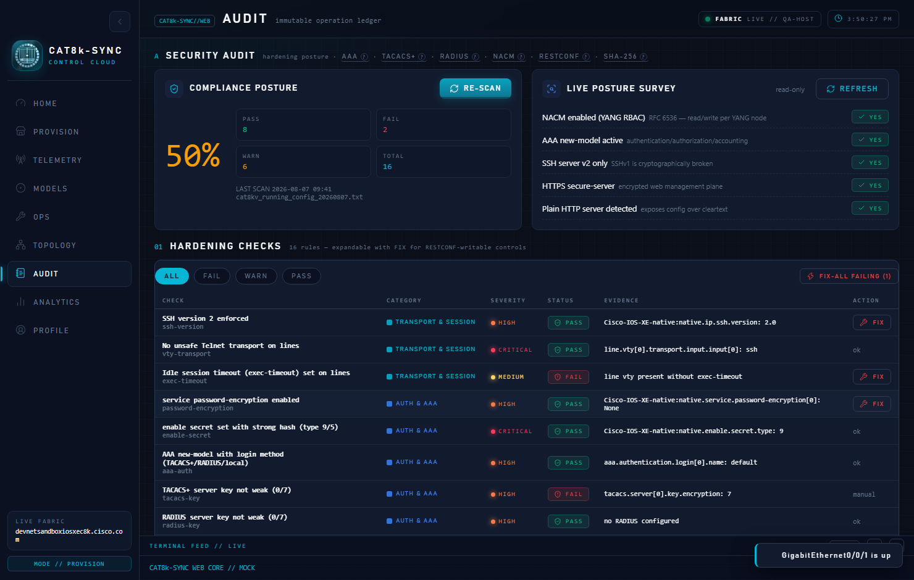
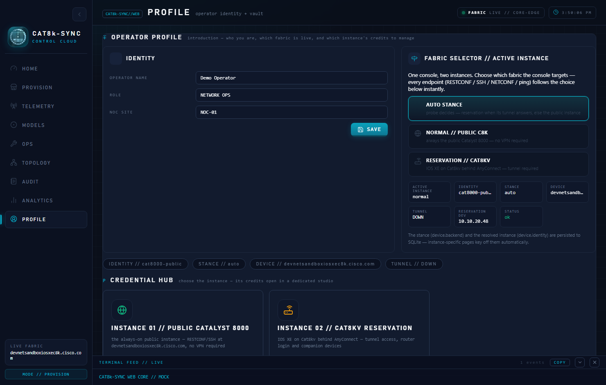
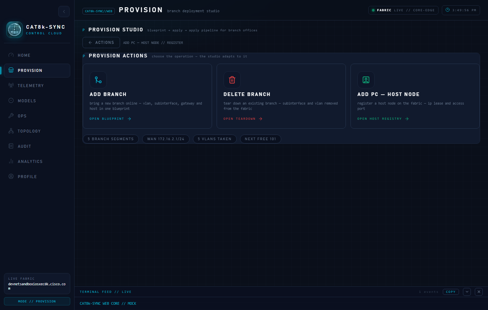
— click a frame to zoom —
Every time-bound chart carries a synchronized window selector — flip the whole page from the last day to the last month in one click.
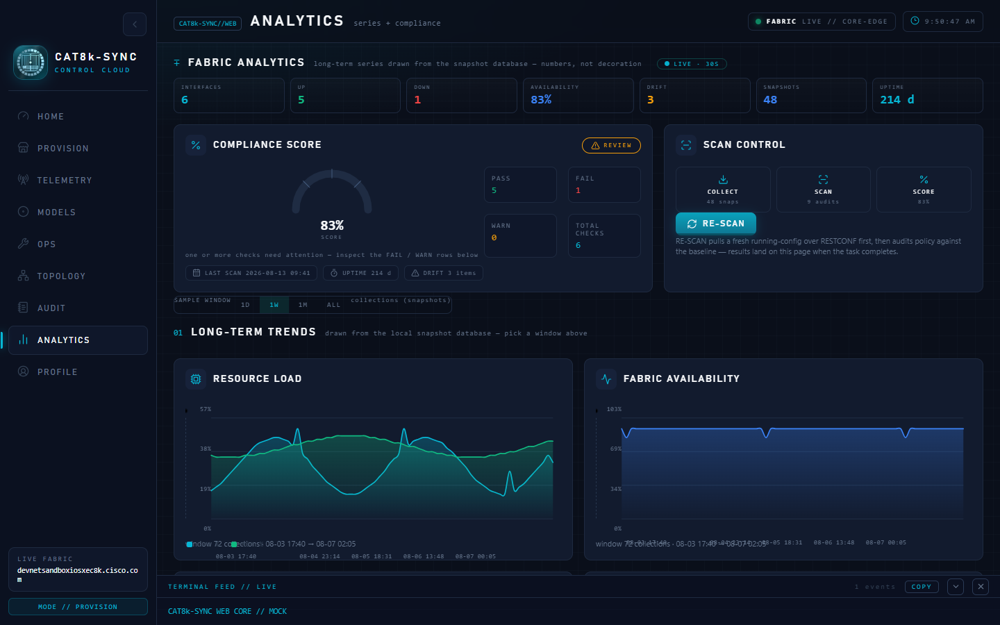
A single orchestrator drives both the web UI and the CLI over the same transports, so the browser and the terminal always agree.
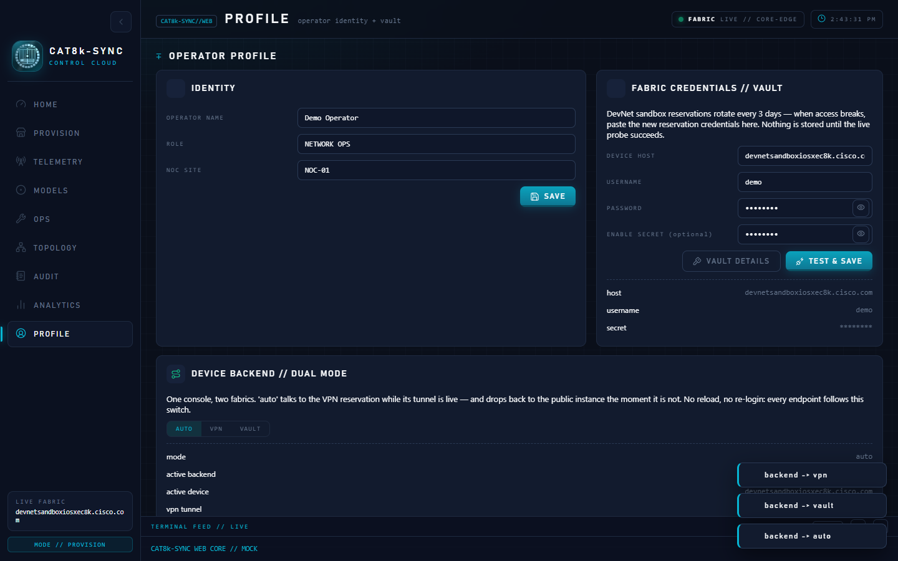
Datastore reads and edits over HTTPS 443 — the default path for telemetry and provisioning.
Secondary transports absorb sandbox flaps with honest retries — never a silent success.
The same orchestrator behind the web window and main.py — identical behaviour, one codebase.
SQLite history, encrypted vault, tamper-evident audit ledger. Loopback-only binding, no network exposure.
Python under the hood, a web UI on top, and the device protocol stack in between.
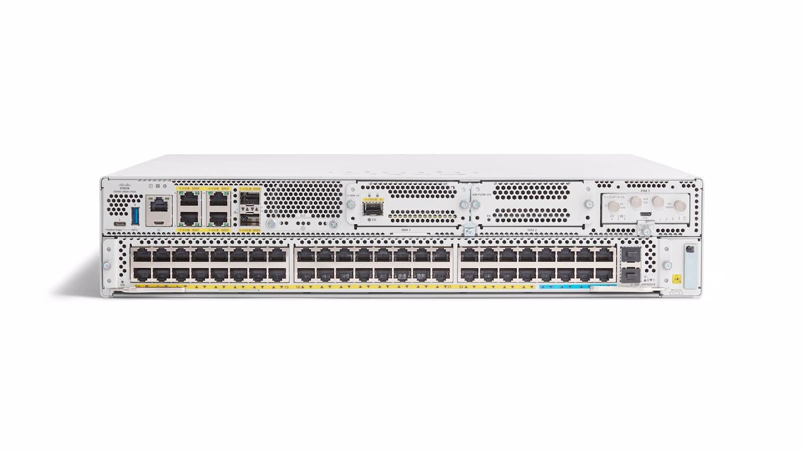
Fork it, run it against the always-on DevNet Sandbox, and turn one router into a managed fabric.